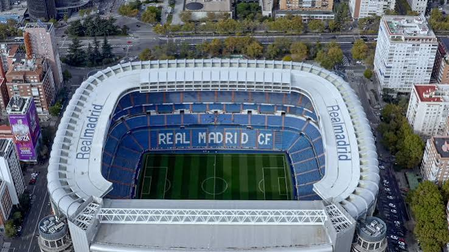
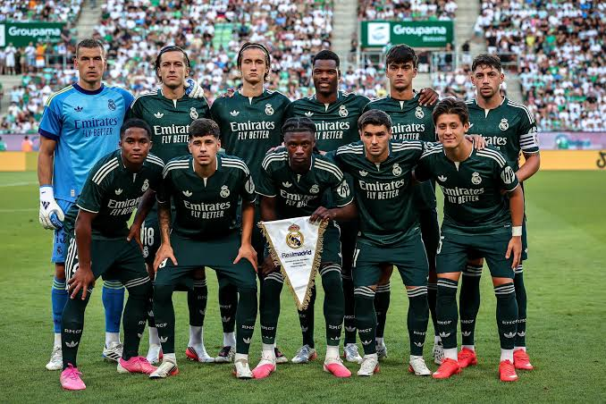

Founded
1902
Spain
Discover the history, stadium, legendary players, major trophies, records, and interesting facts about Real Madrid.
Introduction
Real Madrid is a professional soccer club based in Madrid, Spain. The club was officially founded in 1902 and has grown into one of the most successful and recognized soccer clubs in the world. Real Madrid is famous for its white uniforms, legendary players, enormous fan base, and history of winning major trophies in Spain and Europe.
The club plays its home matches at the Santiago Bernabéu Stadium in Madrid. The stadium opened in 1947 and was later named after Santiago Bernabéu, one of the most important figures in the history of the club. The stadium has hosted major domestic, European, and international soccer matches.
Real Madrid has been represented by many of the greatest players in soccer history. Alfredo Di Stéfano, Ferenc Puskás, Francisco Gento, Raúl, Iker Casillas, Zinedine Zidane, Roberto Carlos, Cristiano Ronaldo, Luka Modrić, Karim Benzema, and many other stars have worn the famous white shirt.
European competition is a major part of Real Madrid's identity. The club won the first five editions of the European Cup and has continued to achieve success in the modern UEFA Champions League. Its ability to win major European matches has helped Real Madrid develop a reputation as one of soccer's most successful clubs.

About the Club
Real Madrid was officially founded in 1902 as Madrid Football Club. In 1920, King Alfonso XIII granted the club the title "Real," which means "Royal" in Spanish. The royal crown was then added to the club's identity, and the team became known as Real Madrid.
The club became a major force in Spanish soccer during the first half of the 20th century. However, one of the most important periods in Real Madrid's history began after Santiago Bernabéu became club president in 1943. During his presidency, the club expanded its stadium and built a team capable of competing with the best clubs in Europe.
Real Madrid dominated the beginning of the European Cup. Led by stars such as Alfredo Di Stéfano, Ferenc Puskás, and Francisco Gento, Madrid won the first five European Cups from 1956 through 1960. This remarkable run helped establish the club's international reputation.
Real Madrid continued to produce successful teams through later generations. The club's academy also produced important players, including a famous group during the 1980s known as "La Quinta del Buitre." Madrid remained one of Spain's strongest teams while continuing to compete for European trophies.
At the beginning of the 2000s, Real Madrid assembled a team filled with international stars. Players such as Luís Figo, Zinedine Zidane, Ronaldo Nazário, Roberto Carlos, David Beckham, and Raúl became part of an era commonly associated with the "Galácticos."
Cristiano Ronaldo joined Real Madrid in 2009 and became the club's all-time leading goalscorer. Alongside players such as Sergio Ramos, Karim Benzema, Luka Modrić, Toni Kroos, Marcelo, and Gareth Bale, Ronaldo helped Real Madrid experience another remarkable period of European success.
One of the club's biggest modern achievements came when Real Madrid won the 2014 Champions League. The victory was especially important because it was the club's tenth European Cup, commonly called "La Décima." Madrid later became the first club in the Champions League era to win the competition three consecutive times, winning in 2016, 2017, and 2018.
Real Madrid continued its European success by winning additional Champions League titles in 2022 and 2024. Across different generations, the club has remained closely connected with star players, major trophies, and dramatic performances on the biggest stages in world soccer.

Club Details
1902
Madrid, Spain
Santiago Bernabéu
White
Club Record
Cristiano Ronaldo is Real Madrid's all-time leading goalscorer with 451 goals in 438 competitive appearances for the club. He played for Real Madrid from 2009 to 2018 and became one of the most successful players in club history.
Success
Legendary Players
Real Madrid has had several players win the Ballon d'Or while representing the club. These players include some of the biggest names in Real Madrid history.
Did You Know?